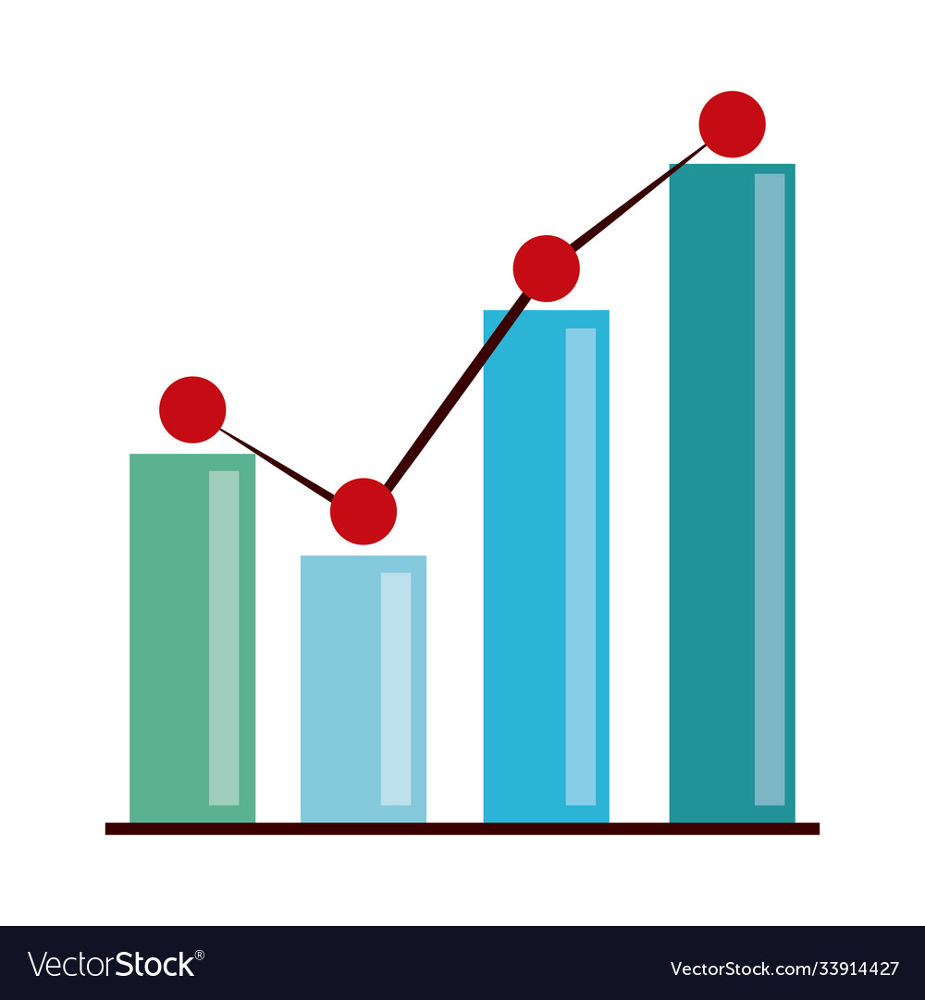

ABOUT DEPARTMENT

Department of Civil Engineering was started in the year 2012 with an intake of 60. Department has well-qualified teaching staff under the leadership of Prof. Lakshminarasimiah N. Department has spacious classrooms, well-equipped laboratories. Department is spread over 1200sqm. Department was started with the aim of disseminating knowledge and arranging a technical visit to construction sites, to bring out hidden talents in the students, to bring industry-institute interaction for the benefit of students and staff. Department has organized few guest lectures and technical talk related to the field of curriculum.
The Department also has a Research Center recognized by VTU.
Our Infrastructure

Department is spread over 1200sqm. Department has spacious classrooms, well-equipped laboratories.
The major infrastructures of the Department include:
- Geotechnical Engineering Laboratory
- Concrete and Highway Laboratory
- Survey Laboratory
- Environmental Engineering Laboratory
- Geology Laboratory
- Software Application Laboratory
- Department Library
- Department Seminar Hall


Results & Achievements

Vision Group on Science & Technology (VGST) Govt. of Karnataka has sanctioned a grant of Rs.20 lakhs to Dr. Anirban Basu, CSE Dept. under the K-FIST(Level 1) scheme.
Most of our faculties have presented papers at National and International conferences/journals.
Ms. Ashwini P B(1AP14CS011) secured 11th Rank in 2nd Semester VTU B.E Examination June/July-2015 and scored 100 out 100 in Engineering Mathematics-II


Re-search

Dr.Anirban Basu Has conducted research on Parallel Processing. Computer Architecture and Compiler Optimization at Indian Statistical Institute, Kolkata from 1979-1985. The work resulted in the Ph.D. thesis of the University of Calcutta.
Led the Foundations and Futures Group (Advanced Research Group) at CDAC, Bangalore from 1989-1995 to work on Performance Analysis, Parallel Algorithms, Parallelizing Compilers, etc. relevant to India’s first Supercomputer PARAM.
Vision Group on Science & Technology (VGST) Govt. of Karnataka has sanctioned a grant of Rs.20 lakhs to Dr. Anirban Basu, CSE Dept. under the K-FIST(Level 1) scheme.